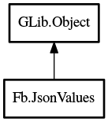

JsonValues
Object Hierarchy:

Description:
public class JsonValues : weak Object
Represents a JSON value handler.
Content:
Creation methods:
Methods:
- public void add (JsonType type, bool required, string expr)
Adds a new FbJsonValue to the
JsonValues.
- public Node get_root ()
Gets the current working root Node.
- public unowned Value? next ()
Gets the next Value from the
JsonValues.
- public bool next_bool (bool defval)
Gets the next boolean value from the JsonValues
.
- public double next_dbl (double defval)
Gets the next floating point value from the
JsonValues.
- public int64 next_int (int64 defval)
Gets the next integer value from the JsonValues
.
- public unowned string next_str (string defval)
Gets the next string value from the JsonValues
.
- public string next_str_dup (string defval)
Gets the next duplicate string value from the
JsonValues.
- public void set_array (bool required, string expr)
Sets the Path for an array to base all
FbJsonValue's off.
- public bool update () throws Error
Updates the current working root.
Inherited Members:
All known members inherited from class GLib.Object
- @new
- new_valist
- newv
- add_toggle_ref
- add_weak_pointer
- bind_property
- connect
- constructed
- disconnect
- dispose
- dup_data
- dup_qdata
- freeze_notify
- @get
- get_class
- get_data
- get_property
- get_qdata
- get_type
- notify_property
- @ref
- ref_sink
- replace_data
- replace_qdata
- remove_toggle_ref
- remove_weak_pointer
- @set
- set_data
- set_data_full
- set_property
- set_qdata
- set_qdata_full
- steal_data
- steal_qdata
- thaw_notify
- unref
- weak_ref
- weak_unref
- notify
- ref_count